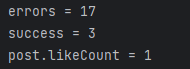
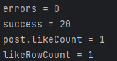
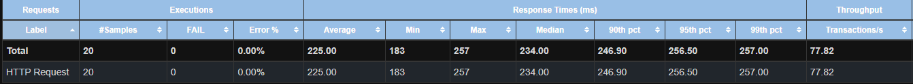
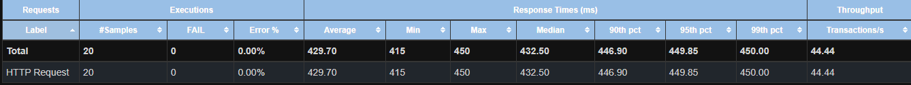

좋아요 동시성 처리
동시 좋아요 요청이 들어오면 유니크 제약 예외가 사용자에게 그대로 노출됐습니다.
락 없이 DB가 중복을 직접 판단하는 멱등 구조로 바꿔 예외 0건을 달성했습니다.
+ affected rows
check-then-act 구조가 원자성을 보장하지 못했습니다
좋아요는 유니크 제약 + 토글 방식이었습니다. 동시 요청이 들어오면 여러 스레드가 모두 "아직 좋아요가 없다"고 판단하고 insert 경쟁에 들어갑니다.
한 스레드만 성공하고 나머지는 SQLIntegrityConstraintViolationException이 발생 —
동일 사용자 20개 동시 요청 테스트에서 17건이 예외로 실패했습니다.
네트워크 지연이나 버튼 중복 클릭으로 실서비스에서도 충분히 재현되는 상황입니다.
문제의 토글 로직
Like existing = findExisting(...); // ① 조회 (check)
if (existing != null) {
likeRepository.delete(existing);
applyDelta(..., -1);
} else {
likeRepository.save(like); // ② 삽입 (act)
applyDelta(..., +1); // ①~② 사이에 경쟁 발생
}
조회(check)와 삽입(act) 사이에 다른 스레드가 먼저 insert하면 유니크 제약 위반이 발생합니다.
재현 결과
DB 제약 덕분에 데이터는 안전했지만, 예외가 사용자에게 에러 화면으로 노출되는 것이 문제였습니다.
DB가 중복을 직접 판단하는 멱등 구조로
| 검토 방식 | 검토 결과 | 판단 |
|---|---|---|
| 비관적 락 (SELECT FOR UPDATE) | Like row가 없으면 잠글 대상이 없어 부모(Post/Comment)에 락 필요. 인기 게시글이 hot row가 되어 전체 직렬화로 처리량 급감, 락 순서에 따른 데드락 위험 | 기각 |
| saveAndFlush + try-catch | 트랜잭션 내부 SQL 실패 시 스프링이 rollback-only로 마킹 → 예외를 잡아도 커밋 시점에 UnexpectedRollbackException 발생 | 시도 후 실패 |
| ON DUPLICATE KEY + 영향 행 수 판정 ✓ | 사전 조회 없이 insert를 먼저 시도하고 중복이면 no-op. 실제 삽입된 경우에만 count 증가 — rollback-only 문제 없음 | 채택 |
최종 구현
-- 멱등 삽입: 중복이면 변경 없이 종료 INSERT INTO likes (target_type, target_id, type, ...) VALUES (...) ON DUPLICATE KEY UPDATE id = id;
// 실제로 새 행이 만들어진 경우에만 count 증가
int inserted = likeRepository.insertIgnore(...);
if (inserted > 0) {
applyDelta(targetType, type, targetId, +1);
}
// 삭제도 DELETE 영향 행 수 기준 동일한 멱등 구조
처음엔 INSERT IGNORE였지만, IGNORE는 NOT NULL·FK 위반까지 경고로 강등해 조용히 삼키므로
유니크 충돌만 no-op 처리하고 나머지 오류는 정상 전파하는 ON DUPLICATE KEY UPDATE id = id로 교체했습니다.
드라이버 동작까지 검증 — useAffectedRows
교체 후 동시성 테스트가 다시 실패했습니다. MySQL Connector/J는 기본값으로 CLIENT_FOUND_ROWS를 켜고 연결해,
중복 no-op에도 "행을 찾았으므로 1"을 반환 — 20개 스레드 전부 inserted > 0으로 판단해 count가 중복 증가했습니다.
| 상황 | INSERT IGNORE | ON DUP KEY (FOUND_ROWS) |
|---|---|---|
| 신규 삽입 | 1 | 1 |
| 중복 (no-op) | 0 | 1 ← 문제 |
JDBC URL에 useAffectedRows=true를 추가해 "실제 변경된 행" 기준으로 전환했고,
전역 설정이므로 기존 UPDATE/DELETE 쿼리에 사이드이펙트가 없는지 쿼리별로 검토했습니다.
동시 20요청 — 예외 0건, row와 count 각 1회 반영
단위 테스트 (동시 20스레드)

동시 20요청 중 17건이 유니크 제약 예외로 실패했다.

20건 모두 예외 없이 멱등 처리 — row 생성과 count 증가는 각 1회만 반영됐다.
JMeter (동일 사용자 · 동일 게시글 · 동시 20 VUser)

Duplicate entry 예외가 응답으로 노출됐다.

20개 동시 요청이 모두 예외 없이 처리됐다.
트레이드오프
ON DUPLICATE KEY UPDATE는 MySQL 전용 문법 — DB 전환 시 PostgreSQLON CONFLICT DO NOTHING등 대안 필요- 토글은 상태에 따라 의미가 달라지는 비멱등 연산이라
addLike / removeLike로 API를 분리 — 응답 구조와 캐시 전략도 함께 조정
"본질은 유니크 제약의 부재가 아니라, check-then-act 구조가 원자성을 보장하지 못한 것이었습니다. 조회를 버리고 DB의 atomic 연산에 판단을 맡겼습니다."
다음 문제는 450만 건 풀스캔이었습니다
likes 데이터가 쌓이자 집계+개인화 단일 쿼리가 풀스캔을 유발해 응답시간이 10초까지 치솟았습니다.